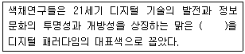
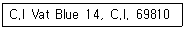
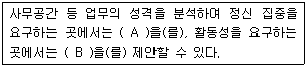
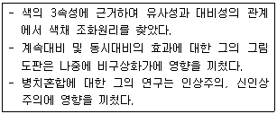
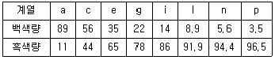
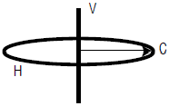

컬러리스트산업기사 (2009-05-10 기출문제)
1과목: 색채심리
1. 색채와 촉감과의 관계가 가장 적절하지 않은 것은?
- 부드러운 감촉 - 밝은 핑크, 밝은 하늘색
- 강하고 딱딱한 느낌 - 어둡고 채도가 낮은 색채
- 건조한 느낌 - 밝은 연두, 밝은 보라
- 촉촉한 느낌 - 파랑과 청록 등의 한색 계열
(정답률: 알수없음)

2. 색채치료에 있어서 색상과 적용범위가 잘못된 것은?
- 빨강 - 빈혈, 폐렴, 결핵
- 파랑 - 히스테리, 불면증, 신경질
- 보라 - 소화장애, 간질환, 중풍
- 노랑 - 당뇨, 습진, 우울증
(정답률: 알수없음)
3. 코퍼레이트 컬러(corporate color)란?
- 전통적인 색이라는 의미로 민족적인 또는 국가적인 배경의 이미지를 주는 색이다.
- 기업이 커뮤니케이션 활동 속에서 기업의 아이덴티티를 소구하기 위한 고유의 색이다.
- 일반적으로 배색의 대상이 되는 부위에서 가장 넓은 면적의 부분을 차지하는 색이다.
- 전체 색조에 긴장감을 주거나 시선을 집중시키는 효과가 있다.
(정답률: 알수없음)
4. 다음 중 색채의 주관적 경험을 보여주는 것이 아닌 것은?
- 페흐너 효과
- 기억색
- 항상성
- 지역색
(정답률: 알수없음)
5. 몬드리안의 '브로드웨이 부기우기' 작품에 예가 되는 것으로 색상, 명도, 채도의 각 속성이 강약의 극단적인 대비가 되어 나타나는 배열효과는?
- 점진적 배열
- 심층적 배열
- 조화도 배열
- 단절적 배열
(정답률: 알수없음)
6. 다음 중 적용된 색채의 이미지가 제품의 장점과 어울리지 않는 것은?
- 부드러움이 증가된 아동용 순면침구 - 짙은 청색과 회색 줄무늬를 사용하여 심플하고 모던한 느낌으로 연출하였다.
- 건강식품광고지 - 초록색 바탕에 흰색 글씨를 사용하였다.
- 바람의 세기가 여러 단계로 조절되는 선풍기 - 흰색과 파란색을 주조색으로 하고 바람의 세기를 조절하는 버튼은 파란색으로 점진적으로 변화시켰다.
- 가열 속도가 빠른 버너 - 전체적으로 선명한 빨간색과 동작 버튼은 밝은 노란색으로 하였다.
(정답률: 알수없음)
7. 스포츠 경기에서 팀 유니폼의 컬러를 정함으로서, 팀 구별이 용이하고, 관람자가 쉽게 경기를 관전할 수 있도록 돕는 색채연상의 역할은?
- 제품 정보로서의 색
- 사회,문화 정보로서의 색
- 국제언어로서의 색
- 공감각으로서의 색
(정답률: 알수없음)
8. 다음 중 각 문화권별로 서로 다른 상징으로 인식되는 색채 선호의 예를 연결된 것이 나머지 셋과 다른 하나는?
- 서양의 흰색 웨딩드레스 - 한국의 소복
- 중국의 붉은 명절 장식 - 서양의 붉은 십자가
- 태국의 황금 사원 - 중국 황제의 금색 복식
- 미국의 청바지 - 성화 속 성모마리아의 청색 망토
(정답률: 알수없음)
9. 색채의 시간성과 속도감에 대한 설명 중 맞는 것은?
- 장파장인 빨간색 계열은 시간이 짧게 느껴진다.
- 높은 명도의 밝은 색이 속도감에서는 빨리 움직이는 것으로 느껴진다.
- 단파장인 파란색 계열은 시간이 길게 느껴지고, 속도감에서는 장파장인 난색계보다 빠르게 움직이는 것 같이 지각된다.
- 높은 채도의 맑은 색은 속도감이 느리며 낮은 채도의 칙칙한 색은 빠르게 느껴진다
(정답률: 알수없음)
10. 색채와 라이프 스타일 특성에 대한 설명 중 적절하지 않은 것은?
- 색에 대한 일반적인 선호 경향과 특정제품에 대한 선호색은 일치한다.
- 자동차에 대한 선호색은 각 지경의 자연환경 및 생활 패턴등에 따라 차이가 있다.
- 색채선호의 연령 차이는 인종. 국가를 초월하여 거의 비슷한 경향을 보인다.
- 색채와 라이프 스타일의 관계는 사회 변화에 따라 끊임없이 변화한다.
(정답률: 알수없음)
11. 색채경험에 대한 설명 중 틀린 것은?
- 색채경험은 주위 환경에 따라 다르게 지각된다.
- 색채경험은 문화적 배경의 영향을 받는다.
- 색채경헙은 객관적 현상이다.
- 지역과 풍토는 색채경험에 영향을 끼친다
(정답률: 알수없음)
12. 배색에 대한 설명 중 틀린 것은?
- 조명의 기술적인 조건을 고려해야 한다.
- 바탕의 재질과의 관계를 고려해야 한다.
- 유행은 변화되는 것이므로 고려사항이 아니다.
- 색상과 색조를 모두 고려해야 한다.
(정답률: 알수없음)
13. 색자극에 대한 반응을 연구한 학자들의 견해가 틀린 것은?
- 파버 비렌 : 빨간색은 분위기를 활기차게 돋궈주고, 파란색은 차분하게 가라앉히는 경향이 있다.
- 웰즈 : 자극적인 색채는 '진한 주황 - 주홍 - 노랑 -주황'의 순서이고, 마음을 가장 안정시키는 색은 '파랑 - 보라 ' 의 순서이다.
- 로버트 로스 : 색채를 극적인 효과 및 극적인 감동과 관련시켜 회색, 파랑, 자주는 비극과 어울리는 색이고, 빨강, 노랑 등은 희극과 어울리는 색이다.
- 하몬 : 근육의 활동은 밝은 빛 속에서 또는 주위가 밝은 색일때 더 활발해지고, 정신적 활동의 작업은 조명의 밝기는 충분하되, 주위 환경은 부드럽고 진한 색으로 하는 편이 좋다.
(정답률: 알수없음)
14. 다음 중 상품을 가장 품위있고 돋보이게 전시하고자 할 때 배경색으로 적합한 것은?
- 저명도 - 진출색
- 고명도 - 유사색
- 중명도 - 난색
- 중명도 - 보색
(정답률: 알수없음)
15. 연속배색을 색 속성별로 4가지로 분류할 때, 해당되지 않는 것은?
- 색상의 그라데이션
- 톤의 그라데이션
- 명도의 그라데이션
- 보색의 그라데이션
(정답률: 알수없음)
16. 다음 중 적절하지 못한 색채 배색은?
- 보색의 느낌이 강한 배색은 색조를 약화하여 조화시킬 수 있다.
- 노란색과 검정색은 강한 대비의 느낌을 준다.
- 주조색과 보조색은 면적비를 고려하여야 한다.
- 강조색은 되도록 큰 면적비를 차지하도록 계획한다
(정답률: 알수없음)
17. 색채의 연상과 관련한 설명으로 틀린 것은?
- 연상은 개인적인 경험, 기억, 사상 , 의견등과 색에서 직접 투영되는 것이다.
- 원색보다는 연한 톤이 될수록 부드럽고 순수한 이미지를 갖는다
- 제품의 색 선정시 정착된 연상으로 특징적 의미를 고려하면 좋다.
- 무채색은 구체적 연상이 나타나기 쉽다.
(정답률: 알수없음)
18. 색의 온도감을 바르게 설명한 것은?
- 색채의 온도감은 색의 색상뿐 아니라 명도에 의해서도 일어난다.
- 색채의 온도감은 사람의 경험과는 상관없이 이루어진다.
- 색채의 온도감은 명도가 낮은 쪽이 더 차갑게 느껴진다.
- 색채의 온도감은 색채를 경험하는 문화적 환경보다는 색채가 지니는 물리적 환경에 의해서만 좌우된다.
(정답률: 알수없음)
19. 다음 중 문화의 발달 순서로 볼 때 가장 늦게 형성된 색채는?
- 흰색
- 파랑
- 오렌지
- 녹색
(정답률: 알수없음)
20. 적십자의 구호물품은 세계적인 공통의 색채체계를 가지고 있다. 그 중 의류가 들어있는 구호품에 사용되는 색은?
- 빨강
- 파랑
- 노랑
- 녹색
(정답률: 알수없음)
2과목: 색채디자인
21. 디자인을 평가하기 위한 요건에 포함되지 않는 것은?
- 디자인의 경제성
- 디자인의 독창성
- 디자인의 탈문화성
- 디자인의 질서성
(정답률: 알수없음)
22. 디자인 프로세스와 색채계획에 대한 설명 중 틀린 것은?
- 제품디자인은 시장상황 분석을 통한 조사의 결과를 바탕으로 전개되며 이 단계에서 경쟁사의 색채분석 및 자사의 기존제품색채에 관한 생산과정과 색채분석이 실행된다.
- 제품디자인은 실용성과 심미적 감성 그리고 조형적인 요소를 모두 갖도록 설계되며 제품색채계획은 이들 중 특히 심미성과 조형성에 관계된다.
- 제품에 사용된 다양한 소재에 맞추어 주조색을 정하고 그 성격에 맞춘 여러 색을 배색하는 색채디자인 단계에서 디자이너의 개인적 감성과 배색능력이 매우 중요시된다.
- 색채의 시제품 평가단계에서는 색채의 재현과 평가환경 등 여러 사항을 고려하여 제품의 기획단계와 일체성을 평가한다.
(정답률: 알수없음)
23. P. O. P 광고의 특성으로 맞는 것은?
- 구매의사 결정시 관여도가 낮아진다.
- 간접적으로 판매촉진 효과를 노리는 광고이다.
- 디스플레이는 P. O. P 광고에서 제외된다.
- 매스미디어 광고를 보완하는 기능을 가진다
(정답률: 알수없음)
24. 다음 설명의 ( )에 알맞은 것은?

- 녹색
- 청색
- 황색
- 적색
(정답률: 알수없음)
25. 지각의 항상성에 대한 설명으로 틀린 것은?
- 크기의 항상성 - 지각되는 크기가 변해도 언제나 같은 크기로 느껴지는 것
- 형태의 항상성 - 물체의 형태가 변해도 같은 형태로 느껴지는 것
- 방향의 항상성 - 사선, 수직, 수평 등 같은 방향으로 느껴지는 것
- 위치의 항상성 - 주의의 변화에 따라 물체의 명암이 달라져도 본래의 밝기로 느껴지는 것
(정답률: 알수없음)
26. 게쉬탈트 심리학자들에 의해서 제시된 시지각 법칙이 아닌것은?
- 근접성의 원리
- 유사성의 원리
- 연속성의 원리
- 대조성의 원리
(정답률: 알수없음)
27. 기능에 충실한 형태가 아름답다는 의미로 ' 형태는 기능을 따른다'라는 말을 한 사람은?
- 프랑크 로이드 라이트(Frank Lloyd Wright)
- 루이스 설리번 (Louis Sullivan)
- 빅터 파파넥 (Victor Papanek)
- 윌리엄 모리스 (William Morris)
(정답률: 알수없음)
28. 디자인의 원리에 대한 설명으로 틀린 것은?
- 대비는 시각적 힘의 강약에 의한 형의 감정효과이다.
- 비대칭은 형태상으로 불균형이지만, 시각상의 힘의 정돈에 의하여 균형이 잡힌다.
- 등비수령에 의한 비례는 1:4:7:10:13:… 과 같이 이웃 하는 두 항의 차이가 일정한 수열에 의한 비례이다.
- 강조는 단조로움을 덜거나 규칙성을 깨뜨릴 때, 관심의 초점을 만들 때 이용하면 효과적이다.
(정답률: 알수없음)
29. 바우하우스에서 형태와 색채요소에 대해 연구하고 발전시킨 사람은?
- 발터 그로피우스
- 모흘리 나기
- 한네스 마이어
- 요하네스 잇텐
(정답률: 알수없음)
30. 선에 대한 설명으로 옳은 것은?
- 점과 점이 이어지는 선을 소극적인 선이라 한다.
- 점의 방향이 끊임없이 변할 때에 직선이 생긴다.
- 포물선은 충실한 느낌을 주며 유연한 표정을 가진다.
- 선의 동적 특성에 영향을 끼치는 것은 운동의 속도, 강약, 방향 등이다.
(정답률: 알수없음)
31. 브랜드 관리 과정이 바르게 나열된 것은?
- 브랜드 설정 - 브랜드 파워 - 브랜드 이미지 구축 -브랜드 충성도 확립
- 브랜드 설정 - 브랜드 이미지 구축 - 브랜드 충성도 확립 - 브랜드 파워
- 브랜드 이미지 구축 - 브랜드 파워 - 브랜드 설정 -브랜드 충성도 확립
- 브랜드 이미지 구축 - 브랜드 충성도 확립 - 브랜드 파워 - 브랜드 설정
(정답률: 알수없음)
32. 실내 디자인의 프로세스(Process)가 올바른 것은?
- ①-④-②-③
- ④-①-②-③
- ②-①-④-③
- ②-③-④-①
(정답률: 알수없음)
33. 1960년대 초 미국 뉴욕을 중심으로 전개되었던 대중예술의 한 경향은?
- 포스트모더니즘(postmodernism)
- 미니멀 아트(Minmul art)
- 옵아트(Opart)
- 팝아트(Pop art)
(정답률: 알수없음)
34. 디자인의 라틴어 어원이 데지그나레(designare)의 의미와 관련이 없는 것은?
- 지시한다.
- 계획을 세운다.
- 스케치 한다.
- 본을 뜨다.
(정답률: 알수없음)
35. 색채마케팅에 있어서 제품의 위치(Positioning)에 대한 설명으로 옳은 것은?
- 소비자들의 마음 속에 차지하게 되는 제품의 위치
- 제품의 가격에 대한 위치
- 제품의 성능에 대한 위치
- 제품의 디자인과 색채에 대한 위치
(정답률: 알수없음)
36. 샤넬라인(Chanel Line)에 대한 설명으로 틀린 것은?
- 직선적 실루엣을 이루는 스커트
- 유행에 따라 좌우되지 않는 길이라는 의미
- 무릎에는 20Cm 위의 스커트 길이
- 시대와 연령을 초월하여 누구에게나 어울리는 선
(정답률: 알수없음)
37. 원래는 그림을 그리기 위해 스케치한 한 컷을 의미했지만 오늘날에는 만화적인 그림에 유머나 아이디어를 넣어 완성한 그림을 지칭하는 것은?
- 카툰 (cartoon)
- 캐리커쳐(caricature)
- 일러스트레이션(illustration)
- 애니메이션 (animation)
(정답률: 알수없음)
38. 기존의 기능을 이용하여 새로운 용도와 형태를 창조하는 경우로 디자인 개념, 디자이너의 자질과 능력, 시스템, 팀윅 등이 핵심이 되는 신제품 개발의 유형은?
- 모방디자인
- 수정디자인
- 적응디자인
- 혁신디자인
(정답률: 알수없음)
39. 아이디어 발상기법 중 브레인스토밍의 원칙에 어긋나는 것은?
- 아이디어에 대한 비판금지
- 자유로운 발언 추구
- 타 아이디어와의 결합, 개선
- 아이디어의 양보다 질을 추구
(정답률: 알수없음)
40. 다음 중 색채계획의 결과가 가장 오래 지속되고 사후관리가 가장 중요시되는 영역은?
- 제품색채계획
- 패션색채계획
- 환경색채계획
- 미용색채계획
(정답률: 알수없음)
3과목: 섹채관리
41. 한국산업규격의 표기방법 중 5R 4/14는 무엇을 뜻하는가?
- 물체색 이름
- 색차 표시
- 수치에 의한 색의 표시
- 색의 삼속성에 의한 표기 방법
(정답률: 알수없음)
42. 염료와 안료의 일반적인 특성을 바르게 설명한 것은?
- 염료는 투명하고, 안료는 불투명하다.
- 염료는 별도의 접착제가 필요하고, 안료는 친화력을 지닌다.
- 염료와 안료는 모두 유기물이다.
- 염료와 안료 모두 매질 내에 입자로써 분포하여 물에 잘 녹는다.
(정답률: 알수없음)
43. HSB 디지털색채시스템에 관한 설명으로 틀린 것은?
- H 모드는 색상으로 0도에서 360도 까지의 각도로 이루어져 있다.
- S 모드는 채도로 0도에서 360도 까지의 각도로 이루어져 있다.
- B모드는 밝기로 0% 에서 100%로 구성되어 있다.
- B 값이 100% 일 경우 반드시 흰색이 아니라 고순도의 원색일 수도 있다.
(정답률: 알수없음)
44. 컬러 장치에서 색료로 발색 가능한 색의 전 범위를 뜻하는 용어는?
- Color Range
- Color Gamut
- Color Matching
- Color Locus
(정답률: 알수없음)
45. 컴퓨터 자동배색에 관한 설명으로 틀린 것은?
- 각 색료들의 분광학적 특성들을 분석하여 입력하고, 발색을 원하는 색채 샘플의 반사율로 배색을 자동으로 처방하는 시스템이다.
- 원하는 색의 색좌표에 맞추어 일치시키므로 광원이 바뀌면 색채가 다르게 보인다.
- 사용되는 색료의 양을 정확하게 처방하므로 비용을 줄일 수 있다.
- 여러 가지 발생과정에서 혼입되는 각종 요인들에 따라 색채가 변할 수 있다.
(정답률: 알수없음)
46. CIE에서 분류한 채도의 3단계 분류에 포함되지 않는 것은?
- chromaticness
- perceived chroma
- adaptation
- saturation
(정답률: 알수없음)
47. 다음 금속들 중 표면의 반사율이 파장에 관계없이 일정하여 거울로 사용하기 적합한 것은?
- 구리
- 금
- 청동
- 알루미늄
(정답률: 알수없음)
48. 천연 염료와 색이 잘못 짝지어진 것은?
- 자초 - 자색
- 치자 - 황색
- 오배자 - 적색
- 소목 - 녹색
(정답률: 알수없음)
49. 표준광 C는 어떤 광인가?
- 북위 40도 흐린 날 오후 2시경 북쪽 창문으로 들어오는 빛
- 색온도 2856K의 완전복사체(black body)에서 나오는 빛
- 주파수 60Hz 입력전압 220V의 주광색 형광등에서 방출되는 빛
- 북위 35도 지역의 맑은 날 색온도 6400K의 자연광 (태양광선)
(정답률: 알수없음)
50. 분광식 색채계에 대한 설명 중 틀린 것은?
- 분광반사율을 측정하여 색채를 산출하는 방법이다.
- 색처방 산출을 위한 자동배색에 측정 데이터를 직접 활용할 수 있다.
- 정해진 광원과 시야에서만 색채를 측정할 수 있다.
- 색채재현의 문제점 등에 근본적인 대응을 할 수있다.
(정답률: 알수없음)
51. 측색의 궁극적인 목적과 거리가 먼 것은?
- 아이디어에 대한 비판금지
- 자유로운 발언 추구
- 타 아이디어와의 결합, 개선
- 아이디어의 양보다 질을 추구
(정답률: 알수없음)
52. 다음 중 색온도가 가장 낮은 것은?
- 주광색 형광등
- 정오의 태양
- 백열등
- 흐린날의 하늘
(정답률: 알수없음)
53. 다음 중 색소가 아닌 것은?
- 나이트로
- 아민
- 티오카보
- 카보닐
(정답률: 알수없음)
54. 색채영상의 입력에 활용되는 기기들의 가장 기본이 되는 요소는?
- 전하결합소자(CCD : Charge Coupled Device)
- 화소 (pixel)
- 비트맵 (bitmap)
- 그래픽카드 (graphic card)
(정답률: 알수없음)
55. 다음 중 효율이 높고 연색성이 좋아 각종 전시물의 조명으로 가장 적합한 광원은?
- 고압나트륨등
- 메탈할라이드등
- 크세논등
- 할로겐등
(정답률: 알수없음)
56. 가공하지 않은 원료상태의 섬유가 갖는 브랑누 빛의 노란색을 가시광선의 빛을 흡수하지 않고 보정할 수 있는 가장 효과적인 방법은?
- 천연적인 방법으로 탈색한다.
- 형광 표백제를 사용한다.
- 붉은색으로 염색한다.
- 흐르는 물에 수세한다.
(정답률: 알수없음)
57. 아래의 컬러 인덱스 구조에 대한 설명으로 맞는 것은?

- C. I Vat Blue 14 : 색료 사용 용도에 따른 분류 C. I. 69810 : 화학적인 구조가 주어지는 물질 번호
- C. I Vat Blue 14 : 색료 사용 용도에 따른 분류 C. I. 69810 : 제조사 등록 번호
- C. I Vat Blue 14 : 색역에 따른 분류 C. I. 69810 : 판매업체 분류 번호
- C. I Vat Blue 14 : 착색의 견뢰성에 따른 분류 C. I. 69810 : 광원에서의 색채 현시 분류 번호
(정답률: 알수없음)
58. 색채계에 대한 설명 중 옳지 않은 것은?
- 색채계의 사용 목적은 색채관리를 보다 객관적이고 과학적으로 하자는 것이다.
- 색채계는 크게 두 가지 종류로, 필터식 색채계와 분광식 색채계로 구분된다.
- 더욱 정밀한 색채관리가 필요할 때는 색차식을 활용하는 것이 좋다.
- 색채 측정값은 표준관측자를 제외한 광원과 측정방식에 따라서는 차이가 나지 않는다.
(정답률: 알수없음)
59. 색채는 광원이 바뀜에 따라 색채가 아주 심하게 변하는 것으로 보일 수 있는데, 이러한 광원에 따른 색채의 불일치 정도를 나타내는 지수는?
- 색온도 (color temperature)
- 연색평가지수 (color rendering index)
- 메타메리즘지수 (metamerism index)
- 색변이지수 (color inconsistency index)
(정답률: 알수없음)
60. 디지털 업무에 있어서 필수적인 3단계를 거쳐 수행되는 작업이 아닌 것은?
- 자료입력
- 자료조작
- 자료조사
- 결과물 출력
(정답률: 알수없음)
4과목: 색채지각의이해
61. 색상대비에 대한 설명으로 틀린 것은?
- 인접되어 대비효과가 나타나는 경우 두 색이 인접되어 있는 부분이 특별히 강하게 대비효과가 나타난다.
- 다른 두색을 동시에 인접시켜 놓았을 경우 두 색이 서로의 영향으로 인하여 색상차가 크게 나는 현상이다.
- 일차색끼리 잘 일어나면 2차색, 3차색이 될수로 대비 효과는 적게 나타난다.
- 빨강, 노랑, 녹색, 파랑 등의 색이 조합되었을 경우 뚜렷이 나타난다.
(정답률: 알수없음)
62. 빛의 굴절현상과 관련한 예가 아닌 것은?
- 아지랑이
- 프리즘
- 신호등
- 돋보기
(정답률: 알수없음)
63. 혼색에 관한 설명으로 옳은 것은?
- 혼색은 색자극이 변해도 색채감각은 변할 수 없다는데 근거한다.
- 가법혼색은 빛의 색을 혼합하면 할수록 점점 어두워지는 것을 말한다.
- 인쇄잉크 색채의 기본색은 감법혼색의 삼원색과 검정색으로 표시한다.
- 감법혼색이라도 순색에 고명도의 회색을 혼합하면 맑아 진다.
(정답률: 알수없음)
64. 인쇄 과정 중에 원색분판 제판과정에서 시안분해 네거티브 필름을 만들기 위해 사용하는 색 필터는?
- 시안색 필터
- 빨간색 필터
- 녹색 필터
- 파란색 필터
(정답률: 알수없음)
65. 색채의 지각효과에 대한 설명으로 옳은 것은?
- 색채의 중량감은 딱딱하거나 부드러워 보이는 시각의 감각현상이다.
- 색채의 온도감은 경험적인 것으로 자연환경에 근원을 둔다.
- 면적이 커지면 원래의 색보다 어둡게 느껴진다.
- 옥외의 표지나 광고물 등은 색채 동화 현상을 이용하면 좋다.
(정답률: 알수없음)
66. 파장이 같아도 색의 순도가 변함에 따라 그 색상이 변화하는 것과 관련한 현상(효과)은?
- 애브니 효과
- 헬슨-저드효과
- 푸르킨예 효과
- 색음현상
(정답률: 알수없음)
67. 색상 대비에 대한 설명으로 옳은 것은?
- 적색을 본 후 황색을 보게 되면 황색은 연두색에 가까워 보인다.
- 스테인드 글라스와 우리나라의 전통적인 색동옷 등에서 불 수 있다.
- 빨강과 파랑의 대비는 빨강을 더욱 따뜻하게, 파랑을 더욱 차게 느끼게 한다.
- 줄무늬와 같이 주위 색의 영향으로 인접색에 가까워지는 현상이다.
(정답률: 알수없음)
68. 색채 대비 및 감정효과에 대한 설명 중 틀린 것은?
- 인접한 두 색이 서로 영향을 미쳐서 채도가 높은 색은 더욱 높아지고, 채도가 낮은 색은 더욱 낮아 보이는 현상을 채도대비라 한다.
- 채도대비는 유채색과 무채색 사이에서 더욱 뚜렷하게 느낄 수 있다.
- 색채의 온도감은 단파장의 색에서 따뜻함을, 장파장의 색에서 차가움을 느끼게 한다.
- 명도대비는 명도의 차이가 클수록 더욱 뚜렷이 나타나며, 무채색의 경우 이런 현상이 두드러진다
(정답률: 알수없음)
69. 눈에 비쳤던 자극이 없어져도 색의 감각은 소멸하지 않고 여운을 남기는데, 자극이 없이지고 잠시 지나면 나타나는 시각의 상은 무엇인가? (복원 오류로 보기 내용이 정확하지 않습니다. 내용을 아시는분께서는 오류 신고를 통하여 내용 작성부탁 드립니다. 정답은 2번입니다.)
- 보색
- 잔상
- 혼색
- (복원중)
(정답률: 알수없음)
70. 조명의 조건에 따라 광수용기의 민감도가 변화하는 것은?
- 지각
- 조합
- 대비
- 순응
(정답률: 알수없음)
71. 다음 중 가장 가벼운 느낌의 색은?
- 5Y 8/6
- 5R 7/6
- 5P 6/4
- 5B 5/4
(정답률: 알수없음)
72. 괄호 안에 들어갈 용어를 A, B 순서대로 바르게 나열한 것은?

- 난색, 한색
- 한색, 난색
- 고명도, 저채도
- 고채도, 저명도
(정답률: 알수없음)
73. 다음 중 주목성이 가장 뛰어난 배색은?
- 빨강과 파랑의 가로 줄무늬
- 초록과 햐양의 세로 줄무늬
- 노랑과 하양의 가로 줄무늬
- 노랑과 검정의 사선 줄무늬
(정답률: 알수없음)
74. 붉은 망에 들어간 귤의 색이 본래의 주황보다도 붉은 기미를 띠어 보이는 효과는?
- 스푸마토(sfumato) 효과
- 베졸드(bezold) 효과
- 플루트(flute) 효과
- 팬텀 컬러(phantom color) 효과
(정답률: 알수없음)
75. 동시대비에 대한 설명이 틀린 것은?
- 자극과 자극의 거리가 멀어지면 대비현상은 약해진다.
- 시선을 한 곳에 집중시키려는 색채지각과정에서 일어나는 현상이다.
- 자극을 부여하는 크기가 클수록 대비의 효과는 커진다.
- 계속 한 곳을 보면 눈의 피로로 인해 대비효과는 감소된다.
(정답률: 알수없음)
76. 태양빛을 프리즘에 통과시키면 색띠가 나타난다. 이와 관련이 없는 것은?
- 빛의 분산
- 빛의 스펙트럼
- 빛의 굴절
- 빛의 산란
(정답률: 60%)
77. 스펙트럼 전반에 걸쳐 비교적 고른 반사율을 가지고 있는 색으로 지각되는 것은?
- 분홍색
- 회색
- 노란색
- 녹색
(정답률: 알수없음)
78. 가법 및 감법혼색에 대한 설명으로 틀린 것은?
- Magenta와 Cyan을 감법혼색하며 Blue가 된다.
- 감법혼색은 색료의 혼합으로 점점 탁하고 어두워지는 특색이 있다.
- Red와 green을 감법혼색하면 Yellow가 된다.
- 컬러 슬라이드, 영화 필름 등은 모두 가법혼색을 이용하여 색을 재현한다.
(정답률: 알수없음)
79. 다음 중 헤링(Hering)의 이론은?
- 상이한 빛이 비교적 작은 주기로 눈에 들어오는 경우 정상적으로 느껴지지 않는다는 이론
- 네 가지 유채색인 빨강-녹색, 노랑-파랑,이 대립적으로 부호화된다는 대립과정 이론
- 세 가지 기본색의 조합으로 모든 색을 경험한다는 삼원색 이론
- 광수용기의 반응과 그 이후의 세포들의 반응에 대한 색채 신경배선모형 이론
(정답률: 알수없음)
80. 보색에 대한 설명으로 틀린 것은?
- 각각의 색은 모두 하나의 보색을 갖는다.
- 모든 2차색은 그 색에 포함되지 않는 원색과 보색관계에 있다.
- 보색인 두 색을 회전혼색 할 때 무채색이 되는 색을 특히 물리보색이라 한다.
- 임의의 두 가지 색광을 어떤 비율로 혼색하여 회색광이 될 때 이 두 가지 색광을 서로간의 보색이라고 한다
(정답률: 알수없음)
5과목: 색채체계의이해
81. 먼셀 색표집에서 소재나 재현의 발달에 따라 표현의 범위가 달라질 수 있는 속성은?
- 색상
- 흑색량
- 명도
- 채도
(정답률: 알수없음)
82. 먼셀 색체계에서 색상을 100으로 나눈 이유와 그 설명으로 옳은 것은?
- 반사율 : 기계적 측정으 값으로 사람의 시감과는 다르다.
- 표준시료 : 색종이나 색지 등의 각 업종에 적합한 표준 시료로 만든 색견본이다.
- 늬앙스 : 색상, 명도, 채도의 변화를 늬앙스라 하고 100으로 나누었다.
- 최소식별 한계치 : 인간이 눈으로 색을 구별할 수 있는 최소거리이다.
(정답률: 알수없음)
83. P. C. C. S 표색계에 관한 설명으로 틀린 것은?
- 명도와 채도를 톤(tone)이라는 개념으로 정리하였다.
- 명도와 0. 5단계로 세분화하여, 총 17단계로 구분하였다.
- 1964년에 일본 색채연구소가 발표한 컬러 시스템이다.
- 주로 건축물이나 중고업제품의 외장색으로 많이 사용된다.
(정답률: 알수없음)
84. 다음 중 혼색계의 단점은?
- 색편 사이의 간격이다.
- 지각적 등보성이 없다.
- 시간이 흐르면서 색차가 발생한다.
- 색표계간의 색좌표 변환은 시감을 통해야만 한다
(정답률: 알수없음)
85. 다음 중 '하늘색(Sky Blue)' 을 나타내는 가장 가까운 L*a*b* 값은?
- L*a*b*= 84, 5, -18
- L*a*b*= 85, -64, 74
- L*a*b*= 57, 88, -51
- L*a*b*= 56, 73, 34
(정답률: 알수없음)
86. 오스트발트의 색체계에 대한 설명 중 틀린 것은?
- E. 헤링의 4원색 이론을 기본으로 한다.
- 색상환의 기준색은 red, yellow, ultramaring blue, sea green 이다.
- 정3각형의 꼭지점에 순색, 회색, 검정을 배치한 3각 좌표를 만들었다.
- 색상표시는 숫자와 알파벳 기호로 나타낸다
(정답률: 알수없음)
87. DIN 표색계에 대한 설명 중 틀린 것은?
- DIN 색체계는 오스트발트 표색계와 마찬가지로 24색으로 구성되어 있으며 색상을 주파자응로 정의한다.
- DIN 색체계의 기본 변수들은 색상(T)번호, 채도(S)의 정도, 명도(V)의 정도이다.
- DIN 색체계에는 흑색점을 정점으로 하는 부채형의 등색상면이 존재한다.
- DIN 색체계에는 채도가 0에서 15까지 주어지며 0은 무채색을 가리킨다.
(정답률: 알수없음)
88. 색채조화의 공통되는 원리에 해당하지 않는 것은?
- 질서의 원리
- 명료성의 원리
- 혼합의 원리
- 대비의 원리
(정답률: 알수없음)
89. 먼셀 표색계는 색의 어떠한 속성을 바탕으로 체계화한 것인가?
- 색상, 명도, 채도
- 백색량, 흑색량, 순색량
- 백색도, 검정색도, 유채색도
- 명색조, 암색조, 톤
(정답률: 알수없음)
90. 먼셀(Munsell)의 기본 색상 기호는?
- C. M. Y
- R. G. B
- Y, B, G, R
- R. Y. G. B. P
(정답률: 알수없음)
91. 오스트발트 표색계를 실제로 색표화한 것으로, 빨간계통 색을 추가,보완하여 아세테이트칩으로 만든 색표집 CHM(Color Harmony Manual)의 구성 색상수는?
- 12
- 18
- 24
- 30
(정답률: 알수없음)
92. 다음의 설명과 관련있는 색채 조화론 학자는?

- 쉐뷰렬(M. E. Chevreul)
- 루드(O. N. Rood)
- 저드(D. B. Judd)
- 비렌(Faber Birren)
(정답률: 알수없음)
93. 오정색과 오간색에 대한 설명으로 옳은 것은?
- 오간색은 홍색, 벽색, 녹색, 유황색, 자색이다.
- 북방 흑색과 중앙 황색의 간색은 자색이다.
- 서쪽을 상징하는 동물은 공작이다.
- 황색은 중앙의 정색으로 목성에 속한다.
(정답률: 알수없음)
94. 문.스펜서의 색채 조화론에 대한 설명 중 틀린 것은?
- 문.스펜서의 색채 조화론은 먼셀 시스템을 바탕으로 한다.
- 2색의 간격이 애매하지 않은 배색이 좋은 배색이다.
- 문.스펜서의 색채 조화론은 조화론을 정량적으로 다루기 위해 색채 연상, 색채 적합성을 함께 고려하였다.
- 색공간(오메가 공간)내에서 기하학적 관계가 있도록 선택된 배색이 좋은 배색이다.
(정답률: 알수없음)
95. 1997년 대한민국정부에서 발표한 태극기의 파란색의 먼셀 좌표는?
- 5B 3/12
- 5B 5/10
- 5PB 3/12
- 5PB 5/10
(정답률: 알수없음)
96. 아래 표에 의거 오스트발트의 색기호 '13lc'는 어떤 색인가?

- 13번 색상, 백색량 8. 9%, 흑색량 56%, 순색량 35. 1%
- 13번 색상, 백샹량 8. 9%, 흑색량 44%, 순색량 47. 1%
- 순색량 13%, 백색량 8. 9%, 흑색량 78. 1%
- 13번 색상, light / cool 톤의 청색
(정답률: 알수없음)
97. L*a*b* 색공간에 대한 설명으로 옳은 것은?
- L*a*b* 색공간에서 L* S는 채도, a*와 b*는 색도좌료를 나타낸다.
- +a*는 빨간색 방향, +b*는 파란색 방향이다.
- 중앙은 무색이다.
- +a*는 빨간색 방향, -a*는 노란색 방향이다.
(정답률: 알수없음)
98. 색이름에 대한 설명으로 거리가 먼 것은?
- 사용하는 색이름의 수는 생활환경에 의해 달라진다.
- 인종에 따라 색이름을 달리 부르고 있다.
- 문화의 정도에 따라 색이름의 발달이 달라진다.
- 색이름은 객관적으로 지칭되므로 이성적인 이름만 통용된다.
(정답률: 알수없음)
99. ISCC-NITS에 대한 설명으로 틀린 것은?
- 기본색명은 orange, pink, brown, olive 등이다.
- 계통색명을 먼셀 색채계와 대응시켜 색입체를 계통적인 색명범위로 분류한다.
- 세계 여러 나라의 계통색명 기준이 되고 한국산업규격의 색이름도 이를 토대로 하고 있다.
- 무채색 단계는 white, light gray, medium gray deep gray, black이다
(정답률: 알수없음)
100. 다음의 색입체 개념도에서 C가 의미하는 것은?

- 명도
- 채도
- 순도
- 색상
(정답률: 알수없음)